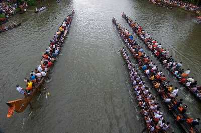
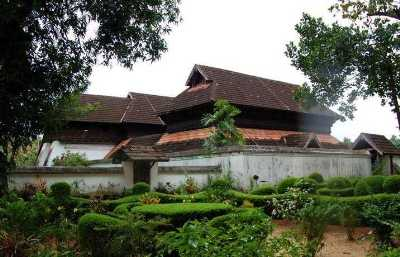

Alappuzha
Vembanad Lake

Vembanad Lake is a lagoon located in the district of Alleppey in the South-Indian state of Kerala. This expansive lake/ lagoon is longest lake in the country and the largest Lake in Kerala, accessible from Kottayam, Kuttanad and Kochi. Vembanad Lake is known by different names in different regions of Kerala. It is called the Kochi Lake in Kochi, the Punnamada Lake in Kuttanad and as Vembanad in Kottayam. Locals also call it Vembanad Kol or Vembanad Kayal.
Nehru Trophy Boat Race
One of the most exciting events to be held in Lake in Alleppey is the Nehru Trophy Boat Race, which is a yearly competitive boating event held on the second Saturday of every August, during the Onam festival. The most popular event is the Snake Boat Race, which is a thrilling event to watch as well as participate in. 100-120 feet long canoe-like boats make serpentine movements through the water, thereby popularising the name.
Krishnapuram Palace
The Krishnapuram Palace is a palace and museum that is located in Kayamkulam, at a distance of 47 km from Alappuzha. This magnificent palace was built during the reign of a Travancore King, Anizham Thirunal Marthanda Varma and is well known for its mural paintings and architecture. The palace is built in the traditional architectural style of Kerala, with a gabled roof, narrow corridors and dormer windows, and is close to the Krishnaswamy Temple at Krishnapuram.
Kuttanad

Kuttanad is a region covering a large part of Alappuzha and some of Kottayam district, the heart of the backwaters of Kerala. Kuttanad is the 'rice bowl of Kerala', being home to lush green rice fields spread extensively, divided by dykes. Travelling through this secluded alcove of nature will give you a feel of traditional countryside life of Kerala. A special peculiarity of this place is its geography. It lies around 2 metres below the main sea level, making it the lowest altitude place in the country.